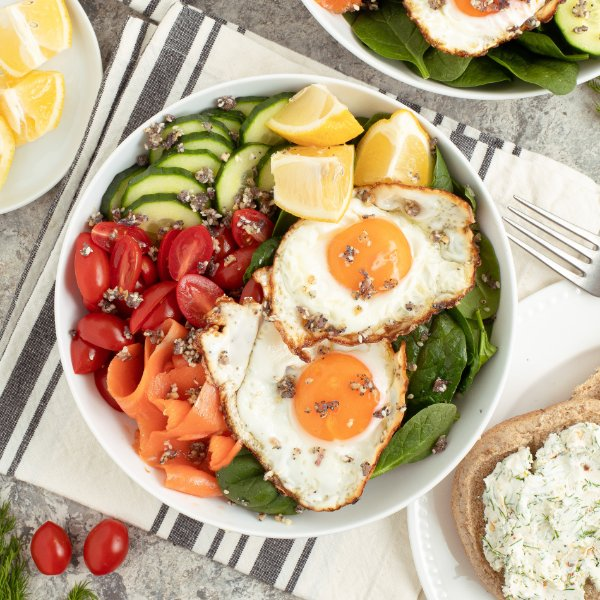

"Everything Spice" Fried Egg Bowl with Spinach, Smoked Salmon & Toast

Total Time
35 min
Nutrition (per serving)
639.6 kcalCalories
41.9 gProtein
33.1 gCarbs
38.8 gFat
Full nutrition table
| Calories | 639.6 kcal |
| Total fat | 38.8 g |
| Saturated fat | 13.9 g |
| Trans fat | 0.8 g |
| Cholesterol | 366.4 mg |
| Sodium | 1711.1 mg |
| Carbohydrates | 33.1 g |
| Fiber | 7.6 g |
| Sugars | 11.6 g |
| Protein | 41.9 g |
| Potassium | 1125.1 mg |
| Calcium | 268.2 mg |
| Iron | 6.8 mg |
| Vitamin A | 2332.3 IU |
| Vitamin C | 43.8 mg |
| Vitamin D | 80.6 IU |
Cookware
Ingredients
- 1 (5 oz) pkgbaby spinach
- 8eggs
- 1English cucumber
- 1 small bunchfresh dill
- 2 clovesgarlic
- 2 (4 oz) logsgoat cheese
- 2 pintsgrape tomatoes
- 1lemon
- 2shallots
- 2 (4 oz) pkgssmoked salmon
- 4whole grain buns or rolls
- black pepper
- crushed red pepper
- extra virgin olive oil
- poppy seeds
- salt
- sesame seeds
Steps
- Preheat a large skillet over medium heat.
- While the skillet heats up, peel and mince shallots.2 shallots
- Once the skillet is hot, add oil and swirl to coat the bottom. Add the shallot and cook, stirring often, until softened, about 2 minutes.2 tbsp extra virgin olive oil
- Meanwhile, peel and mince garlic.2 cloves garlic
- Add garlic, seeds, salt, and pepper to the skillet with the shallot. Continue to cook, stirring often, until the shallot and garlic become golden, 2-3 minutes more. Transfer "everything spice" to a small bowl to keep the garlic from overcooking. (Reserve skillet for later use.)4 tsp sesame seeds
2 tsp poppy seeds
¼ tsp salt
¼ tsp black pepper - Wash and dry the fresh produce. (Skip the spinach if it came pre-washed.)1 English cucumber
2 pints grape tomatoes
1 lemon
1 small bunch fresh dill
1 (5 oz) pkg baby spinach - Trim and slice cucumber into thin rounds; place on a plate.
- Halve tomatoes and add to the plate with the cucumber.
- Zest lemon into another small bowl. Slice lemon into wedges, add to the plate with the veggies, and set aside.
- Using a knife, shave dill leaves off the stems; discard stems and mince the leaves. Add to the bowl with the lemon zest along with goat cheese and crushed red pepper; mash with the back of a spoon to combine and set aside.2 (4 oz) logs goat cheese
½ tsp crushed red pepper - Return skillet to medium-high heat.
- Once the skillet is hot, add oil and swirl to coat the bottom. Working in batches if necessary, gently crack eggs into the skillet and cook until the tops of the whites are set but the yolks are still runny, about 4 minutes. Remove from heat.4 tsp extra virgin olive oil
8 eggs - Meanwhile, halve rolls and toast if desired; spread with lemon-dill goat cheese.4 whole grain buns or rolls
- Chop or tear salmon into bite-sized pieces.2 (4 oz) pkgs smoked salmon
- Divide spinach between bowls. Top with cucumber, tomatoes, lemon wedges, eggs, and smoked salmon; sprinkle with "everything spice." Serve with goat cheese rolls on the side and enjoy!